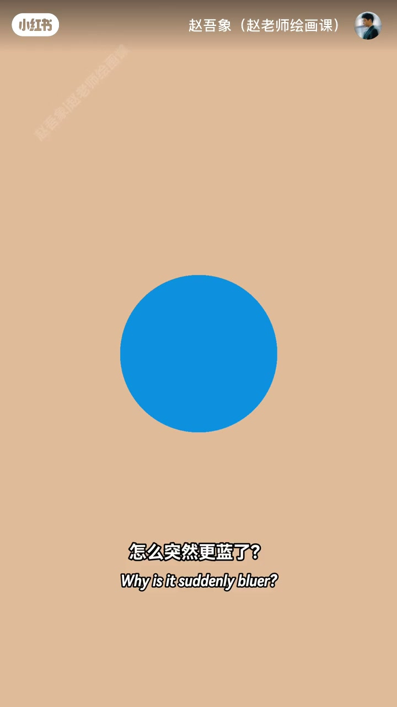
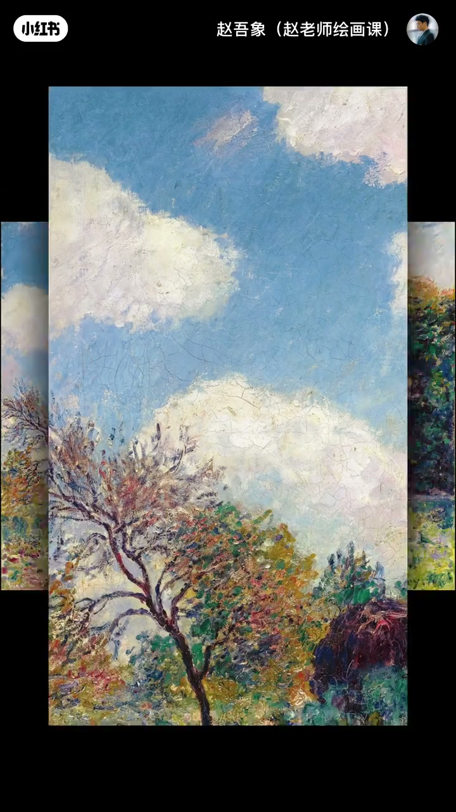
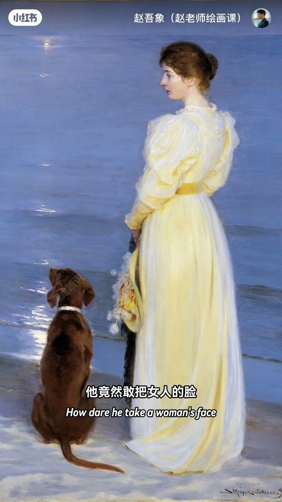
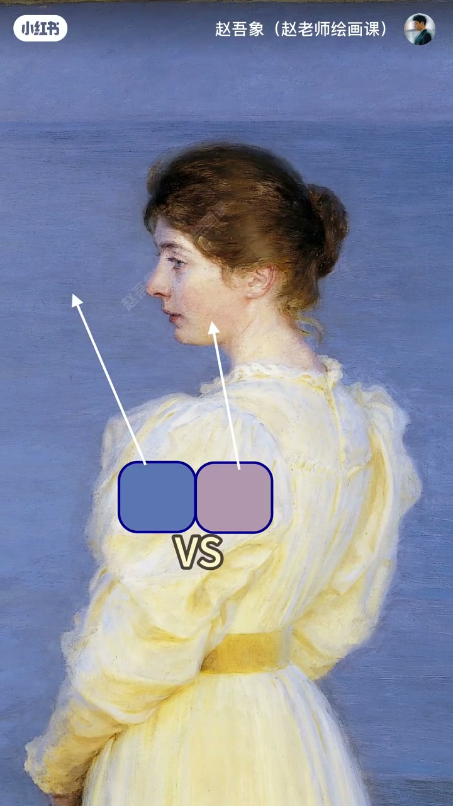

内容要点
同蓝换暖底会突然更蓝——蓝没变，是眼睛见暖会把旁边推得更冷，即冷暖同时对比。西斯莱林间小路天空通透，关键常在暖白云而非「什么蓝」；云改纯白切断冷暖，天空生硬。规律：想让冷色自然，别只加蓝紫，要让亮部颜色发暖。克罗耶敢把女人脸画成冷紫，因海水更冷更蓝，对比下脸反显温暖有血色。高手设计关系。
知识结构
暖底让同蓝更冷更蓝＝冷暖同时对比。
云暖托天蓝；云纯白则天硬；亮部要发暖。
海更冷衬脸暖；关系设计＞单块颜色。
冷色要冷得自然，先经营旁边的暖：亮部发暖、环境对比到位，蓝才会又冷又透而不假。
00:00-00:25同蓝换暖底：突然更蓝
蓝圆不动，换个背景——怎么突然更蓝？蓝还是那块蓝。因为眼睛看到暖色时，会自动让旁边颜色看起来比实际更冷。这就叫冷暖的同时对比。
00:06 暖米色底上的蓝圆是开场证据。

00:25-01:18西斯莱：关键在暖云不在蓝本身
西斯莱林间小路天空通透自然，很多人问大师用了什么蓝；关键不在蓝本身，而在白云——云的暖白让眼睛自动觉得天空更蓝更通透。若云画成纯白，冷暖关系切断，天空马上生冷发硬。
规律：想让冷色看起来自然，别只一味加蓝紫，一定同时让亮部颜色发暖。00:35 风景举证。

01:18-01:57克罗耶：更冷的海托出有血色的脸
克罗耶也是冷暖关系顶级大师：竟敢把女人的脸画成冷紫色，按理显病态；巧在他把海水画得更冷更蓝，对比让脸上的冷反而变得温暖有血色。
真正高手从来不是某一块颜色画得好，而是颜色之间的关系设计得很精彩。预告下期明度同时对比。01:25／01:40 脸与海取样对比。


完整转录（63段）
以下文本由 Whisper medium 模型自动转录，可能存在少量识别误差，已尽可能修正。
这是一块蓝色
我们让它不动
换个背景
怎么突然更蓝了
其实蓝还是那块蓝
这是为什么
因为我们的眼睛
在看到暖色的时候
会自动的让旁边的颜色
看起来比实际更冷
这就叫冷暖的同时对
老规矩
我们来看画
这是西斯兰底下的零间小路
画里的天空通透自然
很多人都会觉得
大师究竟用了什么蓝
其实关键不在蓝本身
而在这些白云
云的暖白
会让我们的眼睛
自动觉得天空更蓝
更通透了
相反
如果你不懂这个原理
云化成纯白色
冷暖关系一切断
天空马上就显得生冷
天硬了
所以我们得到这样一个规律
如果你想让一个冷色
看起来很自然
别只知道一味的加蓝子
那样会越画越假
一定要记得
同时
让亮度的颜色发暖
你一定会回来感谢我的
不止西斯兰
克罗耶也是个冷暖关系的
顶级大师
他竟然敢把女人的脸
画成冷紫色
按理说
这种肤色会显病态
没气氛
但巧就巧在
克罗耶把海水的颜色
画得更冷
更蓝
这种对比
让脸上的冷
反而变得温暖
有血色了
所以啊
真正的高手
从来不是某一块颜色画得好
而是颜色之间的关系
设计得很精彩
下一期
我们继续研究
明度的同时对比
拜拜